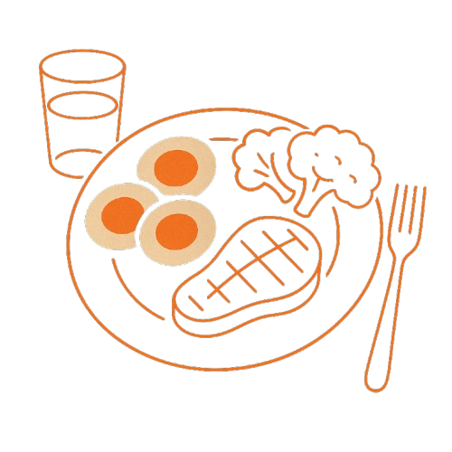

Jídlo jako disciplína
Sebekontrola začíná u talíře

Denní volby tvoří rámec
Jídlo není jen o kaloriích. Není to jen prostředek k přežití. Je to rituál. Opakující se rozhodnutí. Ráno, v poledne, večer. A mezi tím. A každé to rozhodnutí má vliv. Nejen na tělo, ale na tvůj mindset, na tvé sebevnímání, na tvou disciplínu.
Možná si myslíš, že jedno ranní sladké pečivo nic neznamená. Ale ono znamená. Protože když sáhneš po koblize místo vajec, posíláš svému mozku signál: „Nemám pevné vedení.“ Když si po obědě dáš zákusek, i když jsi plný, říkáš sám sobě: „Neposlouchám signály těla. Jedu impulzivně.“
A tak den za dnem vytváříš buď rámec pevnosti, nebo rámec chaosu. Buď tě to drží – nebo tě to rozbíjí. Pomalu, nenápadně, ale jistě.
- Příklad vědomého výběru:
- Ráno: 3 vajíčka na másle, zelenina, voda s citronem
- Impulzivní ráno: bageta u benzínky, káva s mlékem, croissant
Na pohled malý. V dopadu obrovský.
Disciplína se ukazuje ve slabých chvílích
Disciplína se nepozná v neděli na oslavě. Všichni kolem jedí dort, ty si dáš taky – to není žádný test. Skutečný test přichází v úterý večer. Jsi unavený, máš hlad, doma nic moc není. V lednici vidíš zbytek pizzy. V šuplíku sušenky. A v tu chvíli se rozhoduješ – jestli jsi pán, nebo otrok.
Buď uděláš pár vajec, navrhneš si krabičku na druhý den, zaliješ se čajem a jdeš spát. Anebo se necháš unést chutí, otevřeš pytlík a říkáš si: „jednou to nevadí“. Jenže ten pytlík tě nestojí jen kalorie – stojí tě kus tvé vnitřní integrity.
Výmluvy jsou pohodlné.
Ale žádný chlap, který to v životě někam dotáhl, nevyrostl z výmluv.
-
Měj doma plán B:
předem nachystaný cottage, olivy, pár vařených vajec, tvaroh
-
Nikdy nespoléhej na „uvidím podle chuti“.
Chuť je zrádce, když jsi unavený. - Konkrétní nastavení směru:
- Pokud chceš být fit, klidný, výkonově stabilní:
- →rýže, brambory, maso, ryby, vejce, zelenina, voda
- Pokud chceš střídat extrémy a nálady:
- →sladkosti, fastfood, limonády, bílé pečivo
-
Náladové jídlo tě rozhodí.
Směrové jídlo tě drží. - Odměň se jinak:
- klidným večerem bez mobilu
- dobrým tréninkem
- psaním deníku
- časem pro sebe
- Ne koláčem. Koláč tě neunese. Ty máš unést sebe.
- Ukázka chlapského signálu:
- V práci si vytáhneš z krabičky rýži s hovězím a zeleninou. Koukají. Smějí se. Ale ty víš, co děláš.
- Na pumpě si místo bagety koupíš tvaroh, hrst ořechů a vodu. A jedeš dál. Bez úpadku.
- Tréninkové momenty v běžném dni:
- v 10 dopoledne: místo tyčinky dej jablko a pár mandlí
- v 15:00 odpoledne: dej si bílý jogurt s proteinem místo zákusku
- večer: tvaroh, vajíčko, vývar – klid, teplo, regenerace
- ZÁKLADNÍ RÁMEC CHLAPA:
- 3 hlavní jídla denně
-
Každé jídlo obsahuje:
bílkovinu + sacharid + zeleninu - 2× týdně něco „na chuť“ – ale vědomě, ne jako únik
-
Pití:
voda, čaj, černá káva. Nic jiného. -
Zní to jednoduše?
Proto to funguje.
Nejez podle nálady. Jez podle směru.
Jídlo je často první reakce na náladu. Jsi ve stresu? Sladké tě „uklidní“. Jsi ve flow? Dáš si radostně burger. Máš depku? Utěší tě zmrzlina. Jenže tohle není vědomé. Je to čistý autopilot. A autopilot nemá vizi. Ten tě nikam neposune.
Představ si to jako auto. Nálady jsou spolujezdci. Každý něco říká. Jeden chce zastavit, druhý přidat plyn, třetí jet doprava. Ale řidič má směr. A drží ho. Ne podle momentálních hlasů – ale podle cíle.
Chlap s vizí ví, že jeho tělo je nástroj.
Že potřebuje sílu, výkon, klid.
A podle toho jí.
Jídlo není odměna
Zvládl jsi náročný den? Dej si dort. Máš narozeniny? Zasloužíš si dort. Cítíš se mizerně? Dej si pizzu. A tak jíme podle zásluh – jako kdyby jídlo bylo forma pochvaly. Jenže tohle je nebezpečný vzorec. Otevírá dveře emočnímu přejídání a vnitřnímu sabotáži.
Jídlo není odměna. Je to zdroj. Stejně jako voda, spánek nebo dech. Nehledáš v tom extázi – hledáš funkčnost. Spokojenost přichází ne z cukru, ale z vědomí, že jsi ustál sám sebe.
Každý kousek je signál
Každé jídlo něco říká. Tělu i světu. Když si dáš tatarák s vejcem a chlebem, říkáš:
„Jsem chlap, co ví, co chce.“
Když si dáš koblihu a ledovou kávu s karamelem, říkáš:
„Chci se odměnit. A je mi to jedno.“
Nejde o fanatismus. Ale o signály. Sobě i ostatním.
Když zvládneš jídlo, zvládneš víc
Jídlo je malý trénink. Mikrosvět. A jako každý sval – i disciplína roste opakováním. Čím víc odmítneš impulz, tím silnější budeš, když přijde důležité rozhodnutí.
Když zvládneš říct NE večerní pizze, budeš mít větší sílu říct NE blbému vztahu. Když ustojíš chutě, ustojíš i manipulaci. Zní to možná jako přehánění – ale NENÍ. Tělo a mysl jsou propojené. Každý malý odpor tě dělá větším.
Jídlo je těžké. Právě proto je silné.
Proč je jídlo tak těžké? Protože je časté. Není to rozhodnutí jednou týdně. Je to několikrát denně. A pokaždé se musíš rozhodnout. Není divu, že tolik lidí selhává.
Ale právě proto je to nejsilnější disciplína. Když si nastavíš základní rámec, zbytek dne tě následuje. Není to dieta. Je to postoj.
Závěr: Síla je v jednoduchosti
Nejde o makra, aplikace a přepočty. Nejde o keto, paleo, carnivore nebo vegan.
Jde o vládu nad sebou.
O to, že jídlo není zmatek, ale pevný bod dne.
Že víš, co chceš.
A víš, proč to jíš.
Když ovládáš talíř, ovládáš den.
Když ovládáš den, ovládáš život.